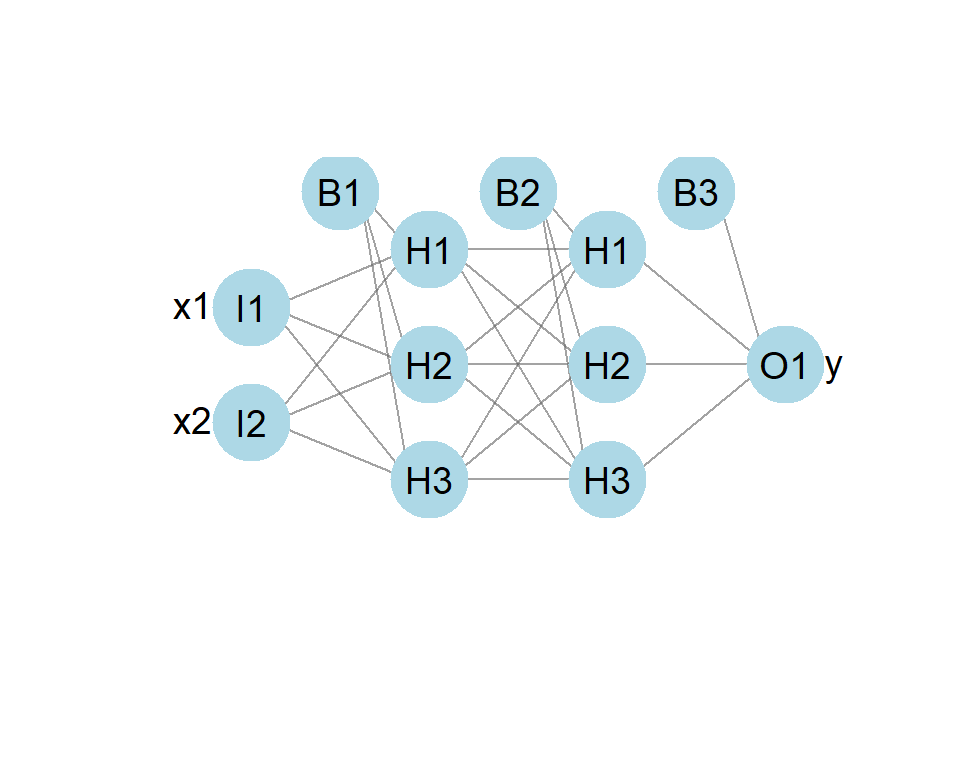
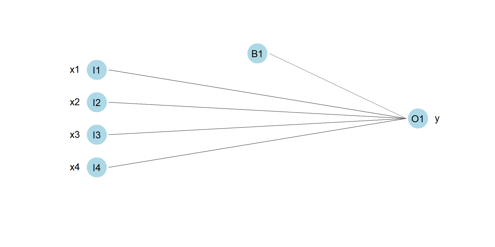
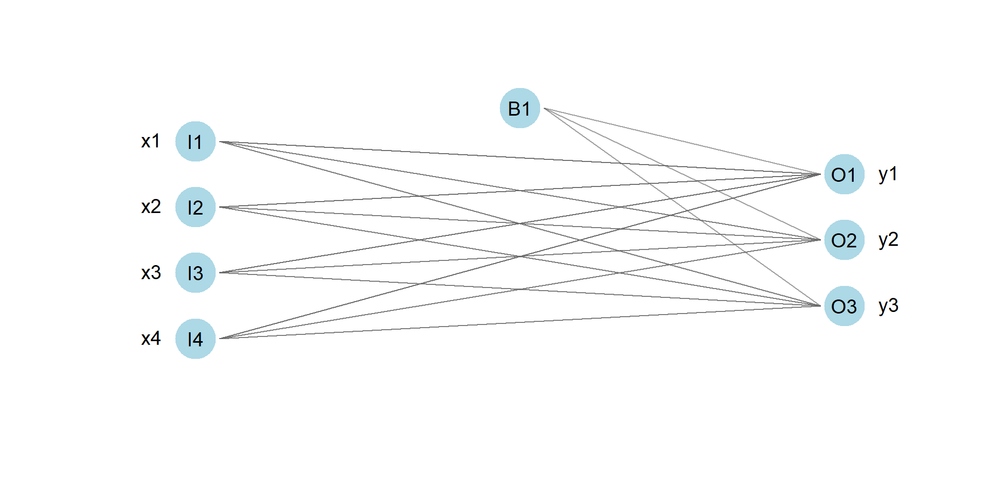
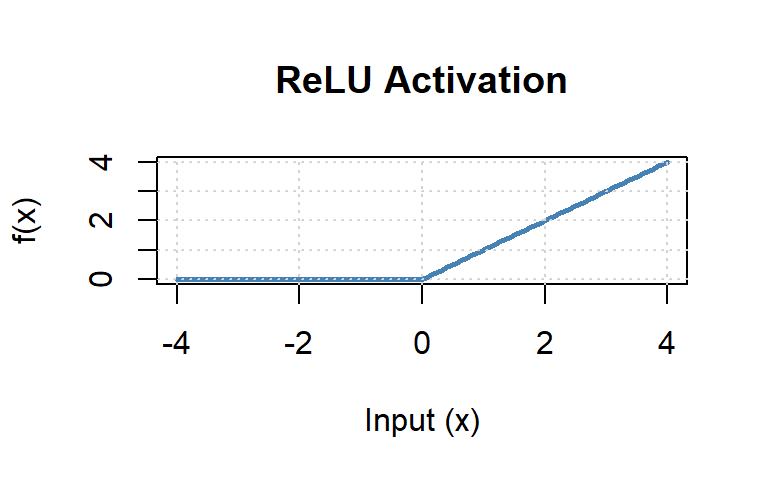
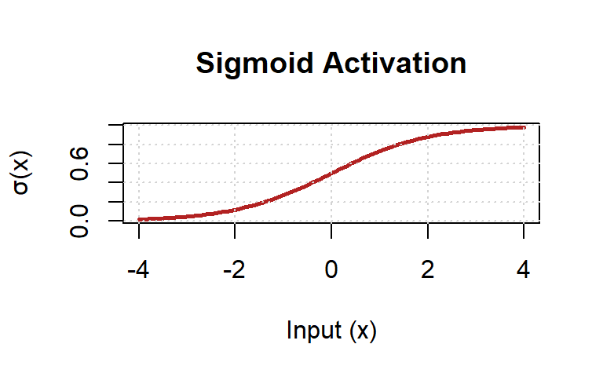

Neural Networks
Introduction to Machine Learning
From Linear Models to Neural Networks
To build a neural network we stack linear maps with non-linear activations.
- To build a network we start with standard linear maps—technically affine transformations because they include both weights (\(W\)) and a bias (\(b\)).
- These combinations hold all the adjustable parameters our network needs to learn.
- However, a linear combination of linear combinations remains strictly linear; on their own, no matter how many we stack, they cannot capture complex non-linear relationships.


To break linearity and allow networks to learn complex shapes, every linear map is followed by a non-linear activation function. Two of the common ones are ReLU and Sigmoid, which appeared in binary classification problems.
ReLU (Rectified Linear Unit)
\[f(x) = \max(0, x)\]

Sigmoid
\[\sigma(x) = \frac{1}{1 + e^{-x}}\]

Beyond these two, there are many other options available, such as tanh, LeakyReLU, or Softmax, but they all serve the same purpose.
By stacking linear maps followed by non-linear activations, the network can “learn” any continuous mathematical function.
- The Input Layer: The first layer, consists of our raw data features \(X\).
- The Hidden Layers: The intermediate layers are called “hidden” simply because their outputs are not directly observed in the training data.
- The Output Layer: The final layer, which produces our final predictions \(\hat{y}\) for regression or classification.

Consider the NN model with:
- input: two units
- 2 hidden layers of 3 units each
- output: 1 unit

To build it in R we use
keras_model_sequenctial.If we use it for classification, we end with Sigmoid
model_nn <- keras_model_sequential() |>
layer_dense(units = 3, activation = "relu", input_shape = 2) |>
layer_dense(units = 3, activation = "relu") |>
layer_dense(units = 1, activation = "sigmoid")- If we use it for regression, we end with the unit.
model_nn <- keras_model_sequential() |>
layer_dense(units = 3, activation = "relu", input_shape = 2) |>
layer_dense(units = 3, activation = "relu") |>
layer_dense(units = 1)